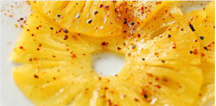

recettes de cuisine
1. Portez 20 cl d'eau à ébullition avec le sucre, le zeste du citron vert coupé en fines lanières et le gingembre râpé. Faites frémir 10 min.
2. Épluchez soigneusement l'ananas, coupez-le en tranches aussi fines que possible. Éliminez le cœur dur avec un emporte-pièce. Disposez-les sur un plat. Arrosez avec le jus du citron puis le sirop bouillant. Laissez refroidir.
3. Répartissez les tranches d'ananas sur les assiettes rafraîchies au congélateur, nappez de sirop parfumé de rhum et décorez de menthe. Dégustez de préférence glacé.
